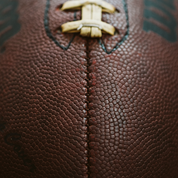
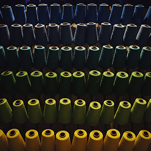
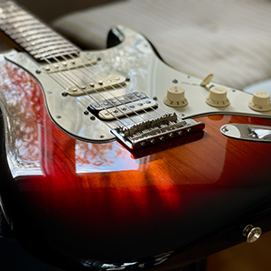

Hobbies
Some of my hobbies are playing basketball, video games, and graphic design. I love to be as active as I can possibly be, so anything sport-related is fun to me. When I have free time I like to read magazines and enjoy some peace and quiet by myself. I also spend time practicing the guitar. I want to get better at playing. Overall I'm down for anything that'll take up time and can enjoyable alone or with someone close.

A picture of a basketball court.

I love football.

I sew in my spare time.
I spend a lot of time graphic designing.
I like to keep up to date on what's current so magazines help.

I love playing my gutiar when i have the chance.